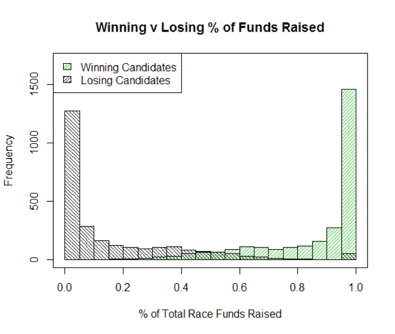
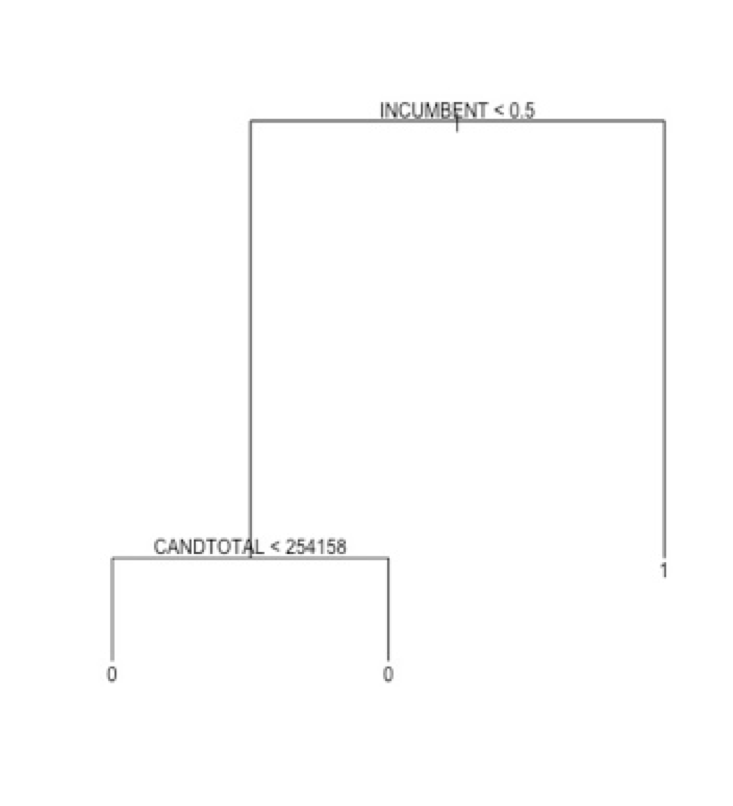
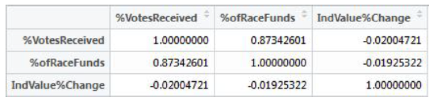
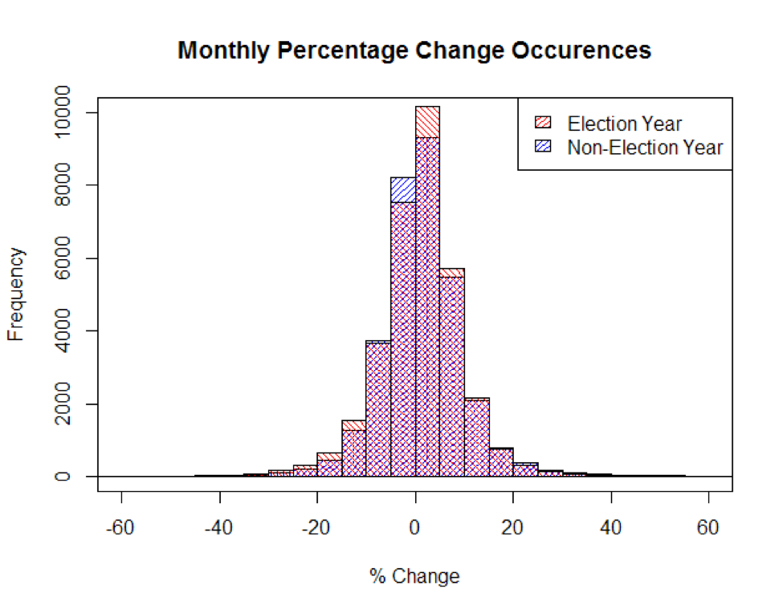
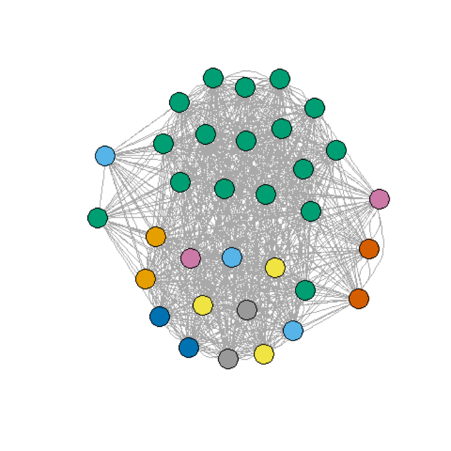
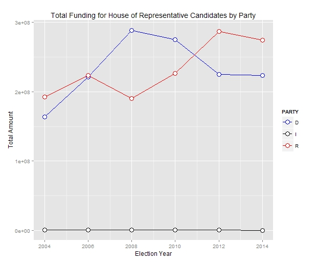
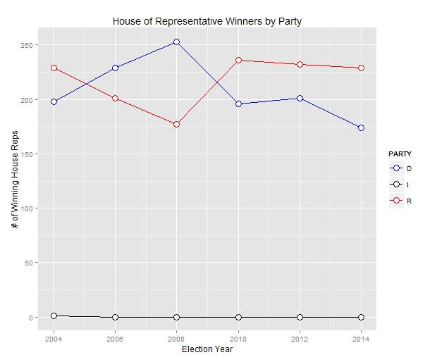
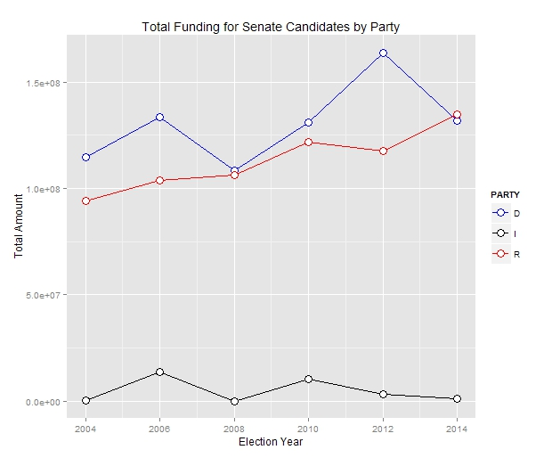
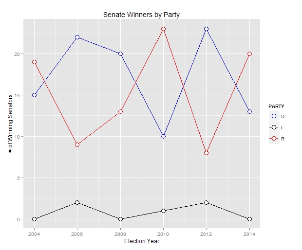

Campaign finance in the United States has been a hot topic for a long time, even before the Supreme Court lifted limits on spending by outside groups in the highly publicized Citizens United ruling. There have been countless attempts to reform this system, ever since the Naval Appropriations Bill of 1867, which prohibited government employees from soliciting donations from navy yard workers. And as the sums of money involved continue to grow (individuals contributed more than $3 billion to federal candidates in the 2012 election cycle), calls for reform also grow louder. Proponents of campaign finance reform, like Senator (and 2016 presidential candidate) Bernie Sanders (D – VT), argue that campaign contributions are a form of “legalized bribery” where contributors expect to see a return on their investment in the form of friendly policy. This idea enjoys widespread acceptance on both sides of the aisle; as Republican presidential candidate Donald Trump put it in a recent debate, “When you give, they do whatever the hell you want them to do.”
Campaign finance is such an important issue in the United States because it is seen as undermining Democracy. Proponents argue that our representatives are supposed to be representing all of us, not just the few that can afford to support their campaigns with large donations, and so those of us without deep pockets get less real influence. Those in favor of the current system argue that spending one’s money is simply another form of free speech, and that candidates are not beholden to their contributors in practice. However, despite its importance, the media often focuses on the polarization of the issue and fails to provide quantitative data that might actually lead to discourse for a compromise, or settle the issue. Not only is this non-productive, but it makes it much more difficult for the average American to get their hands on cold, hard, facts. Furthermore, data sources are disparate, and in some cases, intentionally opaque.
With all of this in mind, we set out to find that data and get those facts. Questions that we hoped to answer included: How much influence does campaign financing really have over the outcome of elections? Can it be quantified? Can we see the “favors” resulting from contributing to a candidate materializing as gains after their election? Do any or all of these questions vary by political party?
Our primary data source became Open Secrets, a research group whose mission statement includes tracking money in U.S. politics. From Open Secrets we were able to obtain data covering the funding of elections every two years from 2004 to 2014. In particular, we were able to obtain contributions by industry (as long as they were large enough to be required to be reported to the government) for every year-election-candidate combination. For election results information, we gathered federal filings to the Federal Election Committee (FEC) for 2004-2012. The 2014 results were unavailable, so they were obtained from the New York Times Election Tracking website. Finally, industry stock data was collected from Yahoo Finance via Quandl, with an eye towards tracking industry performance across elections.
For the majority of the analyses below, we do not use the full dataset constructed from the sources above, but instead use a more limited data set of what we would call “typical” candidates. To give some examples of the “atypical” candidates that were removed: 1) Uncontested candidates, since without an opponent there would not be as much pressure to fund raise, therefore they would be a distinct group from the majority in funding practices. 2) Candidates that ran but received a very small percentage of votes (there are candidates that ran but received only 5 votes, such as write-ins). 3) Clear outlier candidates with such a vast percentage of funding in their race as to eschew a typical funding distribution.

Our analysis found that campaign contributions are highly correlated with electoral success, both in terms of amount of funding and percentage of total funding in a given race received. The correlation coefficient between the percentage of funds received and the percentage of votes received is .87; for every additional percentage point of funds a candidate raised, he/she received an additional .87% of votes. In the graph of percentage of funds raised, it is clear that there are stark differences between the winning and losing candidates, with only a small bit of overlap.
This result was supported by the frequent itemset mining analysis. For this portion of the analysis, funds raised was binned into four categories (very low, low, mid-high, and high). Candidates who received a very low amount of funding tended to be election losers, while candidates who raised a high amount of funding tended to be election winners.
After concluding that campaign funding was highly correlated with electoral success, we ran some predictive analyses to determine how effective the campaign funding variable was in determining election winners. We set up a logistic regression model in which the winner variable was determined solely by the amount of money raised and the number of industries that contributed to a candidate, and found that these two variables alone gave us a classification rate of 81.8%, with most of the predictive power coming from the funds raised variable. We were a bit surprised by the high classification rate; although we came into the project with the idea that funding played a role in election outcomes, we were not expecting its impact to be so large.
We wanted to see if we could develop an even more accurate predictive model, so for the decision tree analysis we added the incumbency status variable. The prediction accuracy improved to about 90%, but, as the tree below shows, the incumbent variable dwarfed both other variables; once the model had a candidate’s incumbency status, nothing else was important in determining the outcome of the election. Basically, what is happening here is the incumbency variable subsumes the contribution amount; incumbents raise higher amounts of funding than non-incumbents, and since the incumbent variable is such a good predictor of winners on its own (over 90% of election winners in our dataset were incumbents), adding more info on top of the incumbency status doesn’t add any predictive power.
However, the fact that incumbency status is a better predictor of electoral success than amount of funding does not mean funding is meaningless. It is abundantly clear that the more money a candidate raises, the higher that candidate’s chances of being elected. An interesting extension of this analysis would be to closely examine outliers; candidates who raised a great deal of money yet still lost and candidates who raised very little money but were elected anyway, to see how they differ from their counterparts.
So far, through our exploration of campaign financing and how that should color our views on campaign financing, we showed that there does seem to be a strong, positive association between campaign contributions and electoral success. However, this is only part of the narrative in support of campaign finance reform. Proponents of campaign reform also argue that due to the vast sums of funds involved, the candidate becomes indebted to her largest backers. As a result, the candidate pays back those debts through kickbacks in the form of favorable policy proposals and other legal treatment. This question does its best with the data at hand to address that argument.
In the exploratory stage of answering this question, we investigated the straight correlations between industry performance, votes received, and the percentage of race funds received (the latter two being good proxies for the winner, as shown in Question One).
Unfortunately, since the correlation showed almost no relationship, this was not a good sign for the analyses to come. However, undeterred, we continued our analysis of the financial data by comparing performance in election years to non-election years in the hopes of finding some difference or boost in performance.
More bad news! Since the monthly percentage change in stock value doesn’t seem to be related at all to the election cycle, it looks like there may be less influence than we had hoped. However, perhaps there is something we are missing about the relationship between candidates and industries that might be able to help us parse the data further.
With that in mind, we analyzed the relationships between industries and candidates using a network. We did this on the full data set without outliers. The following network shows a subset of winning Senators from 2014 as nodes. Connections are formed between candidates that shared at least one of their two top contributing industries.
The main take-away from this network is that the candidates are hopelessly intertwined by industry. One possible conclusion from this network is that industries hedge their bets and support many different candidates to be sure they end up on the winning side in one way or another. However, a more likely explanation in this case is that our data is just not good enough for this sort of analysis. The bins are just too coarse to find the relationships that we are hoping to find. The coarseness comes directly from the binning of the Open Secrets data in order to allow it to merge to the financial data. Given these disappointing results, it seemed better to focus our effort on expanding our other research questions.
Other methods that we considered for exploring the chain of campaign contribution to election to contributor gains, but couldn’t complete due to the form of our data, included “What are the time series effects of an election and industry contributions?”, “What is the influence of Super PACs and individual contributions on campaign success?”. Unfortunately, we simply don’t have the granularity of when contributions are made in order to assess time series relationships. The only time series data that we had was the stock data. In the case of the second question, although Open Secrets has PAC and individual contribution information, it was not in a scrapable form and their API restricts accesses to a limited number of records per day. Furthermore, even if we had setup a strategy for gathering that information, it was only available for one or two election cycles.
Historically, the Senate has been controlled for more years by Republicans while the Democrats have held control of the House of Representatives for a longer amount of time. In our network analysis, our decision to consider the networks of candidates and industries did not uncover any clustering of parties. A limitation of using industries was the ambiguity of how industries are defined by the S&P 500 Index. The implications of this analysis reveals a sense of hedging, so as to remain out of disfavor rather than risking full support to win the favor of the party that may end up being less influential. What we may not see, however, is if there are specific sectors within an industry that eschew this rationale. But this analysis would be outside the scope of our research.

With regard to party disparity in election win percentages, we found that Republicans won more elections in four of the six elections we covered, but in total of all six elections, the disparity was not as prominent with the Republican Party winning in 50.7% of elections compared to 49.1% for Democrats. In the instances where incumbents were running in an election, Republican incumbents were re-elected at a slightly higher rate than Democratic incumbents with percentages of 92.1% to 91.1%.

Finally, observing the total amount of funds received by each party from election year to the next, we find somewhat of an oddity in 2010 where Democrats received more contributions, but won significantly fewer elections. We also found that in total of the six years, Democrats actually raised over 2.5% more funds than Republicans with 50.9% for Democrats to the Republicans’ 48.3%. This is an interesting piece of data as it does not concur with the common perception that money essentially equates to election wins. This is evidenced by the anomaly in 2010.
Further analysis shows when separating Congress data into Senate and House of Representatives, there is no discernible pattern when comparing the total number of election winners with the total amount of funding for each party. Rather, a more distinct relationship is found between the party of the President and the success of that party in Congress. This phenomenon is described as the "coattail effect."
   Given more time, a deeper analysis into the coattail effect would have been interesting to explore. Looking into seeing of the Predictions for Senators vs Representative would have been improved compared to the merged prediction would have been interesting as well. Presidential Candidates are another subset that would have been interesting to look at if we had time and more data, but do to the limitations set in the beginning, that is data that will need to be collected after the fact.
Many of our conclusions supported already expected conclusions.
Please Swipe Right to see some of our takeways!
There are some questions that the data was not built to answer. In particular, the relationship between candidates that win elections and the value of stock prices was a tenuous link to begin with, given the number of other factors that can impact an industry’s stock price. Furthermore, the industry data, as it related to candidates, was simply too coarse to draw any meaningful conclusions.
Initially, we wanted to see if stock prices were influenced by the the number of incumbents that certain sectors supported. This was hard to figure out and we came to the conclusion that if elections influenced stock prices, the effect was negligible.
There is little evidence that any significant disparity exists between the Republican and Democratic parties when considering industry support, fundraising, and election win percentages as variables. T-tests that were run by using these variables to create our samples reported high p-values and confidence intervals that would not allow the rejection of the hypothesis that there is no difference in means.
Throughout all of our research we have demonstrated the opportunities for discovery that answering data science related questions can bring. In particular, we brought together disparate data sources on campaign results and funding in an effort to answer questions that would not be able to be answered with the same level of quantitative rigor otherwise. We have also demonstrated that such research is difficult, and there are a plethora of angles one must consider when engaging in such a nuanced domain as campaign finance. Finally, we showed the many different directions that analysis of such data can take. With that in mind, hopefully data analysts continue to mine data related to campaign finance in the pursuit of answers to more questions, informing the public, and bettering our democracy.
Analytics
Analytics
Analytics
Analytics
CS